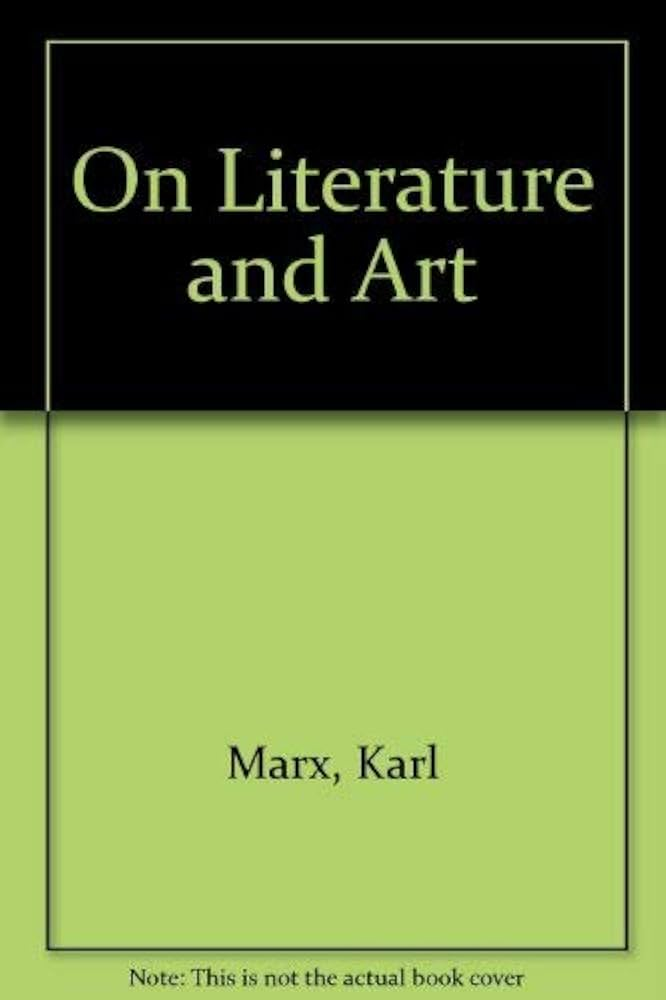
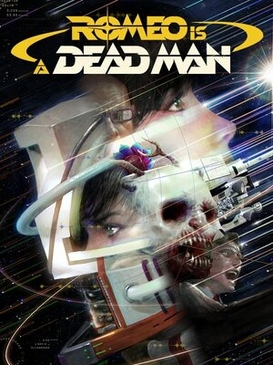

F
hi!!! i'm ethan j
a cyber angel from the life dimension, trapped in mortal flesh and wielding the power of
INFINITE LOVE.
on the internet I go by computer games, chillerbag, ars arcanum, or drones in the sky over new jersey.
I'm a software engineer increasingly trying to become better at my creative pursuits in and outside
programming as I find it the ultimate fulfilment.
This site is raw html, css, and js. I want to do more
of it in js but I don't have any concrete ideas right now. It's also still under construction!
Every other day I'm wonderin:
what's a human being gotta be like?
what's a way to just be competent?
these sweet instincts
ruin my life.
Z
currently reading
Revolutionary Demonology. I'm about halfway through, and whilst I have much more salient and important political theory to be reading right now, I'm obsessed with the prose. A comment on our cybernetic nightmare and a prayer to slay the great serpent; the ourosboros. Progressive in its schizophrenic lurch toward cosmic love. Only when we fall inexorably into our dissolution can we fulfil our destiny and shine. "Love is the thermodynamic property of bodies that attracts them to their death". Just as heteropatriarchal love is rooted in continued proliferation of love and the great mirage of humanity's future, cosmic love rejects salvation, it faces the dark, the eventual solar decay our universe implies. Not concrete relations of particles in the chemical/physical, but probabilistic associations of pure quantum.

Y
currently watching
Revue Starlight. uhh. You know when you're a kid and you imagine your very banal activites as some grand battle and the people in your class as these kind of unique antagonists and protagonists? That's what revue starlight is about, the magical realism we conjure up in our own minds to make the standardness of existence tolerable. Well I guess that puts me somewhere in the middle. It's pretty and surprisingly absurd.

I
currently playing
Romeo is a Dead Man. I'm in love with Suda51's antiestablishment tendencies. It exposes that we don't have a working theory for game criticism academically or linguistically, it eludes us because formalism appears to break when the player is in control of their exposure and is more directly complicit in the existence of the art. I can't tell you how good Romeo is as a result, but I adore this game.
